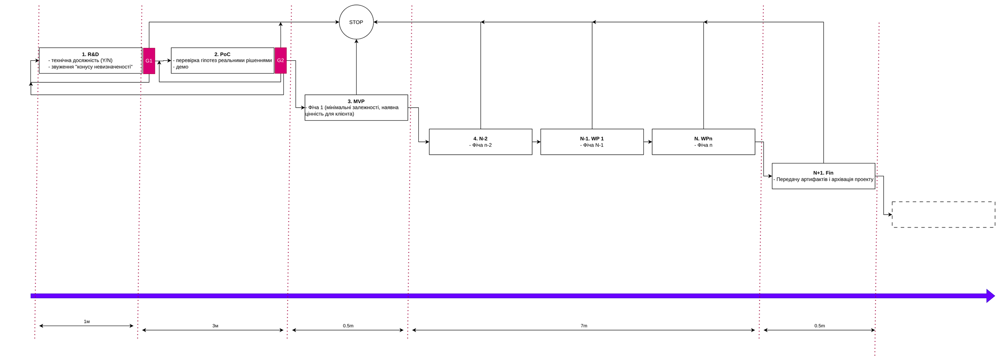
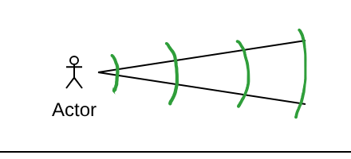
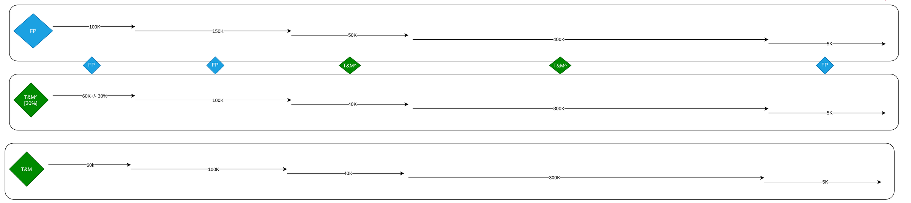
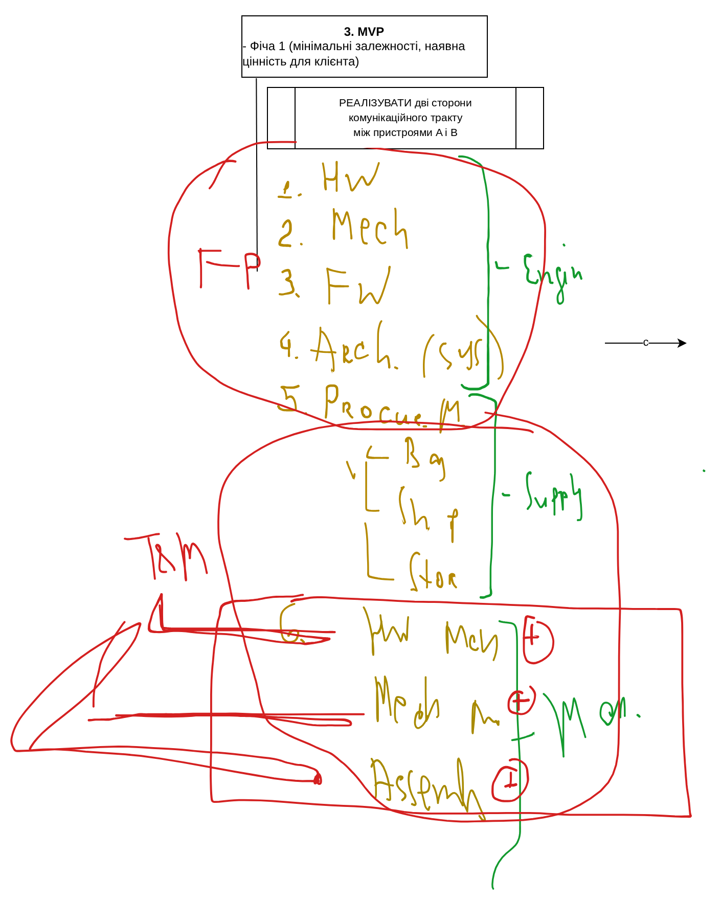

Lehre / Einheit 13 · 27.10.2026
Ein Way of Work für den Kunden: Phasen, Gates und Preismodelle
R&D, PoC, MVP und Arbeitspakete mit Gates, der Unsicherheitskegel, eine grobe Zeitachse, Fixed Price gegenüber Time & Material, T&M mit Obergrenze und kombinierte Modelle.
27.10.2026Einheit 13 / 1401:26:07Vorlesung
Kurschronologie
Ingenieurnotizen
R&D, PoC, MVP und Arbeitspakete mit Gates, der Unsicherheitskegel, eine grobe Zeitachse, Fixed Price gegenüber Time & Material, T&M mit Obergrenze und kombinierte Modelle.
Gates und Unsicherheitskegel
FP, T&M und T&M mit Obergrenze
Kombinierte Modelle nach Phase und Funktion
Vollständige Unterrichtsnotizen
Vollständige Unterrichtsnotizen
Vollständige deutschsprachige Fachmitschrift auf Grundlage des ukrainischen Transkripts vom 27. Oktober und des draw.io-Diagramms des Dozenten. Alle Beträge und Dauern sind illustrativ.
Einheit 13. Ein Way of Work für den Kunden: Phasen, Gates, Unsicherheitskegel und Preismodelle
27. Oktober 2026 · Vorlesung 8 · 1 Std. 26 Min. 07 Sek. Grundlage sind das automatische Transkript
IgorSikotskyKPI_L8_27102026.mp4und das draw.io-Diagramm, das der Dozent während der Einheit gezeichnet hat. Dies ist ein redigiertes Lehrskript, keine wörtliche Abschrift: offensichtliche Erkennungsfehler wurden korrigiert und die Terminologie an frühere Einheiten angeglichen. Alle Beträge und Dauern sind eine Lehrillustration zum Vergleich der Modelle, keine Marktpreise. Redaktionelle Ergänzungen sind gesondert gekennzeichnet.
Stellung im Kurs: Der Lead ist Kunde geworden — wie geht es weiter
Nach dem ersten Follow-up direkt nach der Konferenz und dem zweiten, dem Expertengespräch (Einheit 12), stimmt der Lead einer Zusammenarbeit zu: „Ich sehe, dass Sie unser Problem verstehen, versuchen wir es.“ In diesem Moment ist der Kunde oft etwas ratlos: Er weiß nicht, womit er anfangen soll — „alles auf einmal essen oder Stück für Stück“. Genau deshalb sucht er einen Auftragnehmer: Sie haben Expertise, Personal und Erfahrung, also können Sie eher den richtigen Input geben, als er ihn erraten kann.
Darum wird das Kooperationsmodell Teil des Proposals: wie Sie den Kunden vom ersten bis zum letzten Tag durch das Projekt führen, was er erhält und was es kostet. Die Einheit betrachtet dieses Modell in zwei Dimensionen — Zeit (Phasen) und Geld (Preismodelle).
1. Die Kontaktperson auf Unternehmensseite
Der Kunde will mit Sicherheit wissen, mit wem er künftig spricht. Es ist sinnvoll, den Kontakt schon im Proposal zu benennen:
| Projektgröße | Wer wird Kontaktperson |
|---|---|
| Lang, verzweigt, mehrere Teams und Rollen | Ein fester Manager (PM); bei Bedarf weitere Rollen: Scrum Master, Agile Coach usw. |
| Kompakt, bis etwa 10 Personen im Team | Ein Tech Lead, technischer Manager oder Architekt, der technische Fragen und Teamführung zugleich abdeckt |
| Ein kurzer, separater Arbeitsstrang | Der für diesen Strang verantwortliche Architekt oder Tech Lead |
2. Projektphasen und ihre Ergebnisse
Der Dozent hat die gesamte Zeitachse in typische Phasen zerlegt. Für jede Phase muss dem Kunden klar beschrieben werden, was der Auslöser ist und was das Ergebnis (Outcome) — was er nach Abschluss konkret mitnimmt.


| # | Phase | Ergebnis für den Kunden | Gate nach der Phase |
|---|---|---|---|
| 1 | R&D (Research and Development) | Technische Machbarkeit: ja oder nein, eventuell mit kurzem Kommentar wie „ja, wenn wir diesen Ansatz verwenden“; ein engerer Unsicherheitskegel | G1 |
| 2 | PoC (Proof of Concept) | Hypothesen mit realen Komponenten und Lösungen geprüft; eine vorzeigbare Demo | G2 |
| 3 | MVP | Feature 1: minimale Abhängigkeiten von anderen Features und echter Nutzen für den Kunden | — |
| 4…N | Arbeitspakete (Working Packages, WP 1 … WP n) | Schrittweiser Zuwachs an Produktnutzen, Feature für Feature | — |
| N+1 | Abschluss | Übergabe der Artefakte und Archivierung des Projekts | — |
R&D: Ist es überhaupt möglich
Das Standardergebnis von R&D ist die technische Machbarkeit: Lässt sich die Idee beim heutigen Stand von Wissenschaft und Technik umsetzen? Die Antwort kann sehr kurz sein: „Ja, das geht“ oder „Nein, unter keinen Umständen“. Das zweite Ergebnis ist ein engerer Unsicherheitskegel (siehe Abschnitt 4).
PoC: „auf dem Knie zusammengelötet“
Der Dozent unterschied zwei Projekttypen:
- innovative — mit hohem Anteil an Mathematik, Wissenschaft und Suche; sie haben meist sowohl R&D als auch einen PoC;
- technologische — mit geringerem wissenschaftlichem Anteil, aber voller fertiger Komponenten und Frameworks; sie haben fast immer einen PoC.
Der Kern eines PoC ist nicht nur zu prüfen, dass etwas funktionieren könnte (wie bei der Recherche), sondern etwas zu bauen, das tatsächlich funktioniert. Beispiel: Es soll geprüft werden, ob zwei Geräte über einen optischen Kanal Daten austauschen können. Man baut zwei primitive Versuchsaufbauten, bestückt sie mit den Schlüsselkomponenten, die im Endprodukt eingesetzt werden sollen, schreibt ein einfaches Kommunikationsprotokoll und sieht nach, ob es funktioniert. Ein PoC hat keine Features — geprüft wird nur die Funktionalität.
MVP: das erste Feature mit Nutzen
Ein MVP (Minimum Viable Product; im Kurs „minimal nützliches Produkt“) ist bereits ein Produkt mit Nutzen, also mit Features. Als Erstes wird ein Feature umgesetzt, das:
- die wenigsten Abhängigkeiten von anderen Features hat, also für sich allein bestehen kann;
- einen minimal ausreichenden Nutzen für den Kunden bietet, also beginnt, die Investition zurückzuzahlen.
Der Weg zum MVP ist schwieriger, als es aussieht: Man muss das gesamte Projekt-Ökosystem aufbauen und den Teamkern aufstellen. Die Formel des Dozenten: Ökosystem + Teamkern + Ziel = MVP. Ein MVP erzeugt selbst kein Geld, aber es erzeugt Potenzial — wie potenzielle Energie in der Physik: Damit fährt der Kunde auf Messen und Konferenzen und sucht Investoren, Abnehmer und Partner.
Arbeitspakete und Abschluss
Nach dem MVP folgt ein Zyklus von Arbeitspaketen WP 1, WP 2 … WP n: Features werden geschnitten und nacheinander umgesetzt, der Produktnutzen wächst. Die letzte Phase ist der Abschluss: Übergabe der Artefakte und Archivierung des Projekts. Support, neue Features oder andere Fortsetzungen sind Gegenstand künftiger Vereinbarungen und gehören nicht zum aktuellen Workflow. Sagen Sie dem Kunden offen, dass Sie für eine weitere Zusammenarbeit offen sind, aber Schritt für Schritt vorgehen wollen — „den Borschtsch Löffel für Löffel essen“.
Was der Kunde am Ende erhält
Das Mindestkriterium für Erfolg ist ein vollständig fertiges Produkt in der Form, die der Kunde von Anfang an wollte. Das vollständige Ergebnis ist breiter: Der Kunde wird alle während der Arbeit entstandenen Artefakte haben wollen, um das Produkt zu reproduzieren oder die Entwicklung fortzusetzen — mit Ihnen oder mit einem anderen Team:
- das Produkt und seine technische Dokumentation;
- die Entwicklungsdokumentation, die zur Fortsetzung ohne Sie nötig ist.
3. Gates: Bedingungen für den Übergang zwischen Phasen
Nach R&D und nach dem PoC stehen Gates (G1, G2). Ein Gate ist eine Übergangsbedingung mit drei gültigen Ergebnissen:
- Bestanden — weiter zur nächsten Phase.
- Nicht bestanden, weitersuchen — eine weitere Recherche-Runde oder ein PoC mit anderen Komponenten, sofern der Kunde Zeit und Geld investieren will. Ein PoC-Ergebnis kann so vernichtend sein, dass es das Projekt ganz an den Anfang zurückwirft und eine Neubewertung der gesamten Recherche erzwingt.
- Nicht bestanden, Stopp — ein harter Stopp: Wir steigen aus dem Projekt aus.
Nach dem MVP gibt es keine Gates mehr; ab dann folgt eine Abfolge von Features. Trotzdem kann der Kunde nach jeder Phase aufhören — es ist sein Geld und sein finanzielles Recht.
So erklärt — R&D, PoC, zwei Gates, MVP, Feature-Zyklus und Abschluss — ist der Workflow für den Kunden kein „dunkler Wald“ mehr. Er sieht, dass Sie professionell mit Risiken umgehen und sie steuern. Deshalb lohnt es sich, dieses Schema bereits im ersten Gespräch zum Proposal zu zeigen.
4. Der Unsicherheitskegel


Stellen Sie sich vor, Sie stehen auf der Zeitachse und blicken in die Zukunft. Einen Monat voraus sehen Sie recht klar, wie das Projekt läuft und was es kostet — die Unsicherheitsspanne ist klein. Vier Monate voraus ist sie deutlich breiter: Sie treffen mehr Annahmen. Je weiter voraus, desto geringer die Genauigkeit der Schätzung — für Zeit wie für Geld.
R&D erlaubt es, die Spitze des Kegels nach vorn zu „verschieben“: Sie haben einen Teil des Weges zurückgelegt, Ihr Wissen über das Projekt ist gewachsen, und nun bauen Sie den Kegel von einem neuen Punkt aus — mit kleinerem Fehler bei dem, was das Projekt am Ende kosten wird.
Redaktionelle Anmerkung. Das Konzept geht auf Barry Boehm (1981) zurück; der Name „Cone of Uncertainty“ wurde von Steve McConnell bekannt gemacht. In der klassischen Darstellung kann eine Schätzung in der frühen Konzeptphase etwa um den Faktor 0,25 bis 4 vom tatsächlichen Wert abweichen, und der Kegel verengt sich nur, wenn das Team Entscheidungen trifft, die Unsicherheit beseitigen. „Von selbst“ mit der Zeit verengt er sich nicht — genau deshalb sind R&D und PoC so wertvoll.
5. Eine grobe Zeitachse für den Kunden
Als Nächstes werden ungefähre Zeitrahmen über die Phasen gelegt. Der Dozent hat sie vorerst nominell gesetzt; woher solche Schätzungen kommen, behandelt der Kurs gesondert.
| Phase | Dauer | Kumuliert |
|---|---|---|
| R&D | 1 Monat | 1 Monat |
| PoC | 3 Monate (wenn das Gate bestanden ist) | 4 Monate |
| MVP | 0,5 Monate (≈ 2 Wochen) | 4,5 Monate — der erste Nutzen, der sich schon verkaufen lässt |
| Arbeitspakete (alle Features) | 7 Monate | 11,5 Monate |
| Abschluss (Übergabe der Artefakte) | 0,5 Monate | 12 Monate |
Wichtig ist direkte Kommunikation: Der Kunde muss akzeptieren, dass Gates alle Regeln ändern und den ganzen Plan revidieren können. Ihre Aufgabe ist es, ihn von jedem Übergang zu überzeugen, aber nie zu täuschen. Detaillierte Feature-Schätzungen können auf Wunsch gesondert geliefert werden; der Dozent rät, sich abzusichern und in dieser Phase nicht zu sehr ins Detail zu gehen.
6. Der Preis: Fixed Price, Time & Material und T&M „mit Deckel“
Der Kunde versteht jetzt, was er wann bekommt. Als Nächstes muss er wissen, wie viel es kostet. Derselbe Way of Work lässt sich mit mehreren Modellen beschreiben.


| Phase | Fixed Price (FP) | T&M mit Obergrenze (T&M^) | Kombiniertes Modell |
|---|---|---|---|
| R&D | 100K | 60K ± 30 % | FP |
| PoC | 150K | 100K | FP |
| MVP | 50K | 40K | T&M^ |
| Arbeitspakete | 400K | 300K | T&M^ |
| Abschluss | 5K | 5K | FP |
| Summe | 705K | 505K (Schätzung) | — |
Die Beträge sind illustrativ; in der Einheit nannte der Dozent sie abwechselnd in Dollar und Euro. Der Abschluss ist fast zum Versandpreis angesetzt — als „riesiger Rabatt“ zur Transparenz.
Warum der Preis für dieselbe Arbeit so unterschiedlich ist
Der zentrale Unterschied zwischen den Modellen ist, wer das Risiko trägt.
- Fixed Price: Das Risiko liegt beim Auftragnehmer. Wir haben geplant, wir stellen das Team zusammen, wir sind verantwortlich für Ingenieure, Management, Lieferung, Lieferanten, Fabriken und jede Verzögerung — den Kunden betrifft das nicht. Er zahlt 100K und wartet einen Monat. Verfehlen wir das Ziel — Vertragsstrafen. Genau diese Verantwortung bezahlt die Differenz: im R&D-Beispiel 40K (100K gegenüber 60K).
- Time & Material: Der Kunde bezahlt tatsächlich aufgewendete Zeit und Material; das Risiko einer Unterschätzung liegt bei ihm.
Der Dozent verriet ein „Geheimnis“ des Dienstleistungsgeschäfts: Der Ingenieur bekommt dasselbe Gehalt, unabhängig vom Vertragsmodell — nur die Marge des Unternehmens unterscheidet sich. Die Marge ist die Differenz zwischen dem, was das Unternehmen dem Ingenieur zahlt, und dem, was es dem Kunden für dessen Zeit berechnet. Daraus werden Büros, Verwaltung, Juristen, Finanzabteilung und Serviceabteilungen finanziert — Dutzende, Hunderte und Tausende Menschen, die Projekte begleiten. Im Beispiel liegen die echten Ingenieurskosten für R&D bei etwa 10–30K; unter T&M verlangt das Unternehmen 60K, unter FP 100K, und ein Teil dieser Differenz existiert genau dafür, Risiken abzudecken, wenn etwas schiefgeht.
Welche Risiken beim Auftragnehmer unter T&M bleiben
Dieses Thema wurde mit den Studierenden diskutiert:
| Szenario | Wessen Risiko unter T&M | Folge für den Auftragnehmer |
|---|---|---|
| Ein Schlüsselingenieur erkrankt, das Team verpasst Termine | Das des Kunden | Kein direkter Verlust |
| Eine schlechte Schätzung lässt die Projektkosten steigen | Bis zu einem gewissen Punkt das des Kunden; der Auftragnehmer verdient sogar mehr | Steigen die Kosten um ein Vielfaches, geht der Kunde, und das Unternehmen verliert den erwarteten Gewinn |
| Das Team löst die Aufgabe nicht | Zunächst das des Kunden | Der Kunde geht und kommt nie wieder — ein Reputationsschaden |
Das Reputationsrisiko schmerzt am meisten bei großen Kunden (Beispiele aus der Vorlesung: Volkswagen-Konzern, SpaceX): Scheitert man an einem 100-Tausend-Projekt, kann man auf einer schwarzen Liste landen und dauerhaft deutlich mehr Geld verlieren.
Unter Fixed Price trifft ein Scheitern das Unternehmen mit allen drei Schlägen zugleich:
- entgangener Gewinn;
- Reputationsverlust;
- eine vertragliche Strafe — meist ein Mehrfaches des Phasenwerts (Illustration des Dozenten: etwa 400K Strafe für eine Phase im Wert von 100K).
Deshalb kann FP bis zu doppelt so teuer sein wie T&M, und man sollte es nur wählen, wenn man absolut sicher ist, was man tut.
Zwei Arten von T&M
| Modell | Was der Auftragnehmer verspricht | Verantwortung |
|---|---|---|
| T&M (ohne Grenze) | Eine Schätzung der Phase, z. B. 60K | Keine: „Wir haben 60K geschätzt, nicht getroffen — sorry“ |
| T&M^ („mit Deckel“, Obergrenze) | Die Schätzung plus Toleranz für Marktschwankungen; in der Praxis des Dozenten ±30 % | Reputationsbezogen: Sie verpflichten sich, innerhalb der Toleranz zu bleiben |
Die Logik von T&M^: „Nach unserer Schätzung kostet die R&D-Phase 60K; es können 10K oder 60K werden, aber der Markt ist instabil, also planen wir 30 % Fehlertoleranz ein und bleiben sicher in diesem Korridor.“
Redaktionelle Anmerkung. International heißt dieses Modell Capped T&M oder T&M mit Not-to-Exceed-Grenze (NTE). Die genaue Toleranz ist Vereinbarungssache; 30 % sind die persönliche Praxis des Dozenten.
7. Ein kombiniertes Modell nach Phasen
Die Modelle müssen nicht auf das ganze Projekt auf einmal angewendet werden. Der Dozent schlug vor, das Modell an das Risiko jeder Phase anzupassen:
| Phase | Modell | Warum |
|---|---|---|
| R&D | FP | Die Phase endet mit einem Gate, das gut schützt |
| PoC | FP | Ein PoC ist an sich riskant — die Hypothese kann scheitern. Aber am Ende steht ein Gate, also ist jedes Ergebnis ein Erfolg: „Es hat nicht funktioniert“ ist auch eine Antwort. Man kann sogar versuchen, den Kunden zur oberen Kostengrenze zu bewegen, falls er mitgeht |
| MVP | T&M^ | Ein Embedded-Projekt: viele Abhängigkeiten von fremder Fertigung und von Postdiensten mit riesigen Verzögerungen |
| Arbeitspakete | T&M^ | Dasselbe Abhängigkeitsgewirr |
| Abschluss | FP | Die Artefakte gehören Ihnen; Sie wissen sicher, dass sie vorliegen |
Das Ergebnis ist ein „schlaues“ Modell: FP, wo Gates Sie schützen; T&M^, wo viel Unsicherheit herrscht; FP am Ausgang, wo alles unter Ihrer Kontrolle ist.
8. Wenn der Kunde überall auf Fixed Price besteht
Manchmal will der Kunde FP für alles, und ohne Flexibilität verlieren Sie ihn. Eine zweite Ebene des Ausgleichs ist, eine Phase nach Funktionen aufzuteilen. Der Dozent nahm die MVP-Phase und schaute „unter die Haube“.
MVP-Ziel im Lehrbeispiel: beide Seiten des Kommunikationswegs zwischen zwei Geräten A und B umsetzen. Jedes hat eigene Elektronik, ein Gehäuse und Firmware; die Daten laufen über eine Funkverbindung. Das erste MVP muss die Verbindung zwischen diesen beiden Geräten herstellen.


| Gruppe | Rollen und Funktionen | Modell |
|---|---|---|
| Engineering | Hardware (Elektronik), Mechanik (Gehäuse für beide Geräte), Firmware (Mikrocontroller auf beiden Seiten und das Protokoll), Systemarchitekt (verbindet HW, Mech und SW: wie es aussieht und zusammenwirkt) | FP |
| Supply | Procurement Manager: Einkauf, Versand, Lagerung, Umgang mit Postdiensten | T&M |
| Manufacturing | Elektronikfertigung, mechanische Fertigung, Montage | T&M |
Die Erklärung an den Kunden lautet etwa: „Da du unbedingt Fixed Price willst, kommen wir dir entgegen: das gesamte Engineering ist Fixed Price. Preis und Zeitplan des Engineering-Teils sind genau so, wie wir es jetzt vereinbaren; überschreiten wir sie, zahlen wir aus eigener Tasche. Supply und Manufacturing laufen auf Time and Material.“ Der Grund ist einfach: Das Unternehmen fertigt nicht selbst; es entwickelt und übernimmt die Fertigungskontrolle. Die Elektronik fertigt etwa ein chinesischer Auftragnehmer, die Mechanik Werke in Bila Zerkwa, Charkiw und Luzk, die Endmontage noch ein anderes Werk. Das Unternehmen übergibt die Zeichnungen, sein Ingenieur übernimmt die technische Aufsicht. Diese Lieferanten können ihre Preise ändern, und dafür will das Unternehmen keine Verantwortung tragen.
Praktische Schlussfolgerungen
- Ein Kooperationsmodell ist Pflichtbestandteil des Proposals: Der Kunde muss Phasen, Auslöser und Ergebnisse sehen.
- R&D beantwortet „Ist es möglich“, der PoC „Funktioniert es mit realen Komponenten“, das MVP „Gibt es einen ersten Nutzen“.
- Gates nach R&D und PoC haben drei gültige Ergebnisse: weiter, erneut suchen, Stopp.
- Der Kunde kann nach jeder Phase aufhören; alles nach dem Abschluss ist Gegenstand neuer Vereinbarungen.
- Der Unterschied zwischen FP und T&M ist die Risikoverteilung; der FP-Preis enthält die Kosten dieses Risikos.
- Unter T&M riskiert der Auftragnehmer weiterhin entgangenen Gewinn und Reputation; unter FP kommt eine Strafe hinzu.
- T&M^ mit Toleranz (z. B. ±30 %) ist ein Kompromiss zwischen Flexibilität und Verantwortung.
- Modelle lassen sich nach Phasen (FP–FP–T&M^–T&M^–FP) und nach Funktionen (Engineering FP, Beschaffung und Fertigung T&M) mischen.
Fragen zur Selbstkontrolle
- Warum braucht der Kunde schon im Proposal ein Kooperationsmodell?
- Wer sollte in einem kompakten bzw. einem verzweigten Projekt Kontaktperson sein?
- Wie unterscheidet sich das Ergebnis von R&D von dem eines PoC?
- Wie unterscheiden sich innovative und technologische Projekte hinsichtlich R&D und PoC?
- Welche zwei Bedingungen muss das erste MVP-Feature erfüllen?
- Welche drei Ergebnisse sind an einem Gate möglich?
- Was ist der Unsicherheitskegel, und wie beeinflusst R&D ihn?
- Warum ist Fixed Price bei gleichem Umfang teurer als Time & Material?
- Welche Risiken verbleiben unter T&M beim Auftragnehmer?
- Wie unterscheidet sich T&M von T&M mit Obergrenze?
- Warum kann ein PoC zum Festpreis übernommen werden, obwohl die Hypothese scheitern kann?
- Wie lässt sich eine Phase aufteilen, um einem Kunden entgegenzukommen, der überall FP will?
Angekündigt
Der Dozent kündigte an, „in die Rechtecke hineinzusteigen“: woher die Phasendauern (1, 3, 0,5, 7 Monate) kommen und warum die ersten beiden Phasen Fixed Price sein können, die dritte und vierte aber nicht. Ein Teil davon wurde bereits in der nächsten Einheit am 28. Oktober behandelt. Dies ist ein angekündigter Plan.
Materialien der Einheit
- Das draw.io-Diagramm der Einheit: .drawio herunterladen (öffnet in diagrams.net / draw.io).
Geprüfte Links
- S. McConnell. The Cone of Uncertainty (Construx, White Paper): https://www.construx.com/wp-content/uploads/2019/02/CxWhitePaper_ConeOfUncertainty.pdf